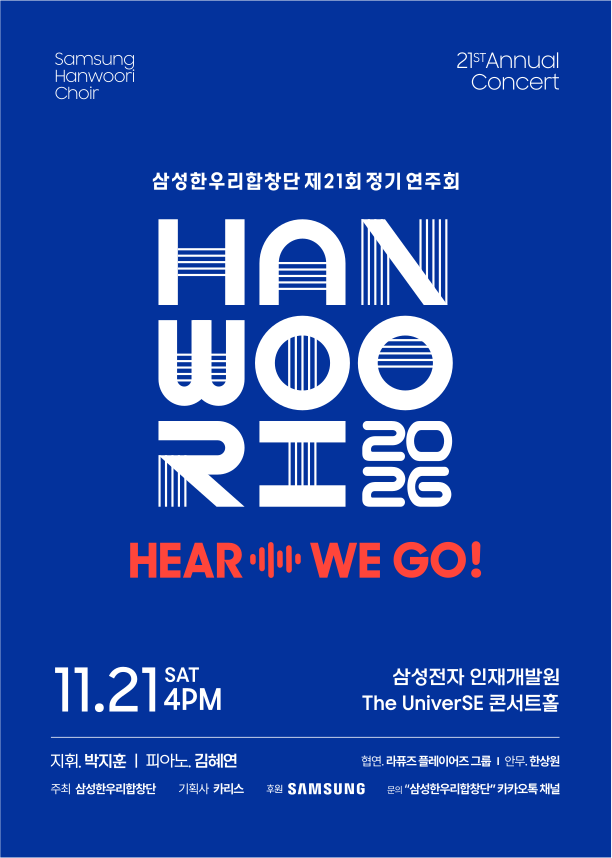

지휘
박지훈
삼성한우리합창단 제21회 정기연주회 지휘
상세 약력은 추후 안내합니다.
21ST ANNUAL CONCERT · 2026
삼성한우리합창단 제21회 정기연주회
서로 다른 목소리, 하나의 하모니.
기쁨과 위로, 그리고 새로운 울림을 함께 나눕니다.

OFFICIAL POSTER 크게 보기 ↗MANY VOICES. ONE HARMONY.ABOUT THE CHOIR
음악으로 전하는 화합과 감동,
삼성한우리합창단입니다.
2003년 8월, 음악을 사랑하는 삼성그룹 임직원들이 자발적으로 모여 창단했습니다. 정통 클래식부터 현대 가요까지 폭넓은 레퍼토리로 관객과 만나고 있습니다.
정기연주회와 기획 공연, 자선 연주를 이어오며 매년 공연을 통해 난치병 환우를 위한 기부 활동도 함께하고 있습니다. 단원들의 열정과 우정, 음악에 대한 사랑으로 더 많은 사람들과 새로운 울림을 나누고자 합니다.
MEET THE ARTISTS
제21회 정기연주회 출연진
지휘
삼성한우리합창단 제21회 정기연주회 지휘
상세 약력은 추후 안내합니다.
피아노
삼성한우리합창단 제21회 정기연주회 피아노
상세 약력은 추후 안내합니다.
협연
삼성한우리합창단 제21회 정기연주회 협연
그룹 소개는 추후 안내합니다.
안무
삼성한우리합창단 제21회 정기연주회 안무
상세 약력은 추후 안내합니다.
THE PROGRAM
클래식부터 영화 속 선율까지.
OFFICIAL LEAFLET
LET’S HEAR IT TOGETHER
공연 관련 문의는 카카오톡 채널
‘삼성한우리합창단’으로 보내주세요.
예매 및 입장권 신청 방법은 확인 후 안내합니다.